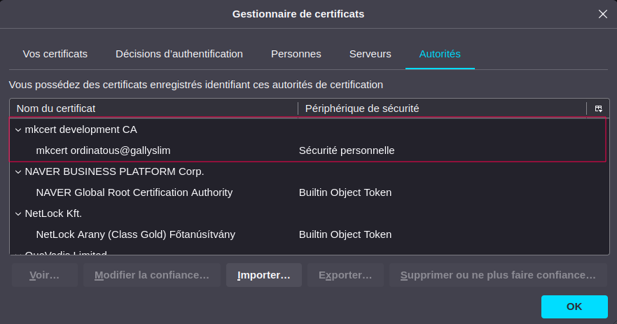
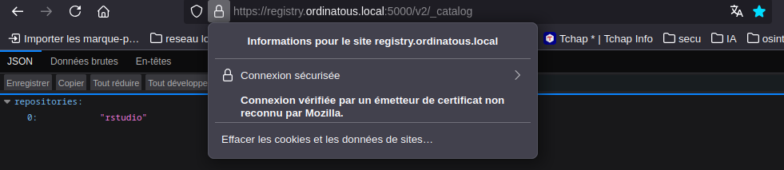

Préparatation du registry
Création des répertoires de travail
mkdir -p registry/{data_registry,certs}
Docker-compose
services:
registry:
image: registry:latest
container_name: registry
hostname: 'registry.ordinatous.local'
volumes:
- /home/ordinatous/registry/data_registry:/var/lib/registry
- /home/ordinatous/registry/certs:/certs
environment:
- REGISTRY_HTTP_TLS_CERTIFICATE=/certs/registry.ordinatous.local+3.pem
- REGISTRY_HTTP_TLS_KEY=/certs/registry.ordinatous.local+3-key.pem
ports:
- "5000:5000"
restart: unless-stopped
Mise en place de l’autorité de certification
Ce n’est pas super bien expliqué, je pense que j’aurais du utiliser go pour le lancer.
Sur le site d’un French DevOp, ce n’était pas claire non plus, sa commande était tronquée, j’ai tourné un peu en rond..
asdf le couteau suisse DevOp
Site du projet Dépot Git du projet
- Récupération de l’archive
wget https://github.com/asdf-vm/asdf/releases/download/v0.16.2/asdf-v0.16.2-linux-amd64.tar.gz
- Dés archivage
Attention de bien adapter le chemin, votre répertoire /bin n’est peut être pas à la même place que moi. Ce répertoire fait déjà parti de votre $PATH, aucune action a effectuer dans le .bashrc.
tar -xvzf asdf-v0.16.2-linux-amd64.tar.gz -C ${HOME}/bin \
chmod +x ${HOME}/bin/asdf
- Vérification des la liste des pluggins
En fait, non, la liste est beaucoup trop grande, faites un bash asdf plugin list all
Je ne suis pas certain que les pluggins soient installés, et activés. Je n’ai pas encore lu le README.md
- Récupération du pluggin mkcert pour asdf
asdf plugin add mkcert https://github.com/salasrod/asdf-mkcert.git \
asdf install mkcert latest \
asdf set --home mkcert latest
MKCert
Installation du CARoot
asdf exec mkcert -install
Le ROOTCA sera installé là: ~/.local/share/mkcert/
ls ~/.local/share/mkcert/
rootCA.crt rootCA-key.pem rootCA.pem
J’ai converti le .pem en .crt avec openssl
openssl x509 -in rootCA.pem -inform PEM -out rootCA.crt
Mise a jour de magasin des certificats racines
Le /home utilisateur n’étant pas l’endroit qui va être scanné , il faut copier le certificat au bon endroit.
Le répertoire de destination peut varier d’un système à un autre.
sudo cp ~/.local/share/mkcert/rootCA.crt /usr/share/ca-certificates/
sudo update-ca-certificates
J’ai également crée un répertoire dans le système docker , pour lui copier le CARoot. Mais , je n’aurais pas du le nommer comme ça, ça n’a pas de sens .Mais ce n’est pas grave.
mkdir -p /etc/docker/certs.d/registry.ordinatous.local/
rootCA.crt /etc/docker/certs.d/registry.ordinatous.local/
Création des certificats
cd registry/certs \
asdf exec mkcert portainer.ordinatous.local localhost 127.0.0.1 ::1
Les certificats sont bien là
ls ~/registry/certs/
registry.ordinatous.local+3-key.pem registry.ordinatous.local+3.pem
Lancement de la stack avec portainer
Nous avons vu comment faire pour utiliser le système de stack dans cet article à l’aide du fichier docker-compose vu plus haut.
services:
registry:
image: registry:latest
container_name: registry
hostname: 'registry.ordinatous.local'
volumes:
- /home/ordinatous/registry/data_registry:/var/lib/registry
- /home/ordinatous/registry/certs:/certs
environment:
- REGISTRY_HTTP_TLS_CERTIFICATE=/certs/registry.ordinatous.local+3.pem
- REGISTRY_HTTP_TLS_KEY=/certs/registry.ordinatous.local+3-key.pem
ports:
- "5000:5000"
restart: unless-stopped
Si vous n’avez pas portainer , il vous suffit de copier ce fichier dans votre projet de l’adapter, puis de le lancer avec:
docker compose up -d .
J’ai rencontré des erreurs de certificat , j’ai donc redémarré le service docker. Puis c’est rentré dans l’ordre.
Nous avons vu dans cet article, comment tagger, puis pousser une image vers le registry local.
Ajout du CARoot dans le magasin Firefox

Je n’ai pas d’erreur de certificat

Ce qui confirme bien , que l’image rstudio du précédent article, ce trouve bien dans le registry . Je vais pouvoir ajouté des certificats à tous mes services locaux, j’ai horreur du message d’alerte : votre connexion n’est pas sécurisée.